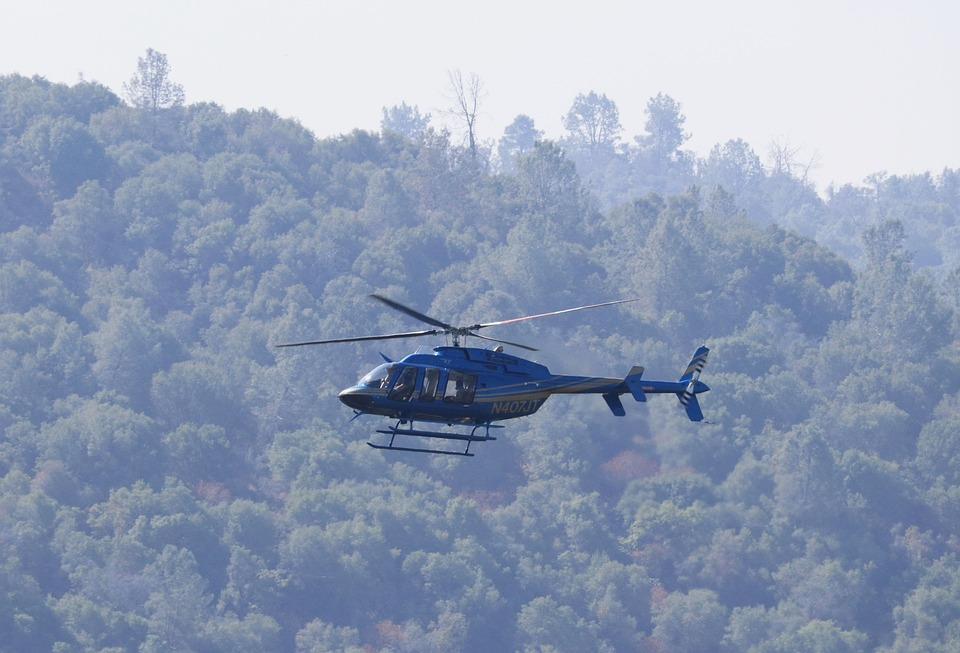
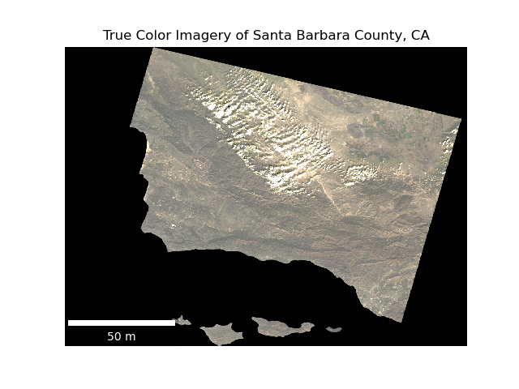
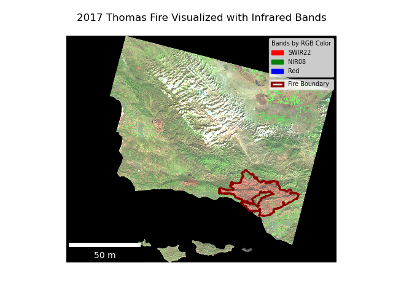
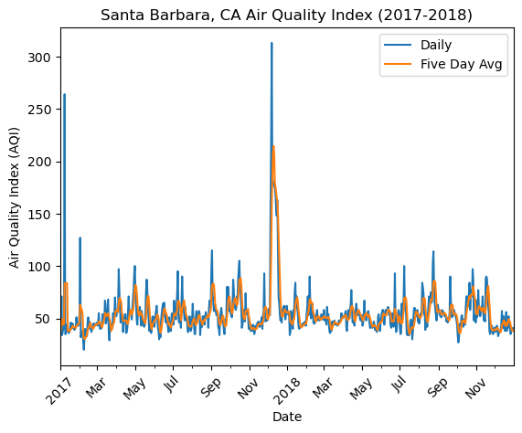

# Subset for 2017 Thomas Fire
thomas_perim = fire_perim[(fire_perim['fire_name'].str.contains('thomas')) &
(fire_perim['year'] == 2017)]
# Make folder to save shapefile
if not os.path.exists('data/thomas_perim'):
os.makedirs('data/thomas_perim')
# Save subset as .shp
thomas_perim.to_file('data/thomas_perim/thomas_perim.shp')GitHub
All relevant files and figures can be found here:
https://github.com/silkieMoth/eds220-hwk4
About

Forest fires are a whale in the California ecosystem with 7,668 wildland fires occurring each year (CAL FIRE, 2024) with the impacts of wildfires becoming greater with climate change (McKenzie et al., 2004).
The Thomas Fire was a wildfire that was particularly notable for it’s sheer size. In 2017 when it burned through 281,893, it asserted itself as the largest CA wildfire in history at the time. To this day, even as wildfires increase in severity, it still remains the 8th largest wildfire to date as of December 12, 2024.
The goal of this analysis is to map the impact of the 2017 Thomas Fire relative to the rest of Santa Barbara County. Because the fire left a ‘scar’ that is visible from space, it shows up in satellite imagery. Landsat data can capture this damage, as the infrared reluctance of burned land is high.
Cross-referencing the Thomas Fire perimeter and the Landsat imagery allows us to visualize the scar left behind. Furthermore, we can see the effect of the fire on air quality by visualizing the AQI (Air Quality Index) in the region. AQI is a measure of air quality as it relates to human health, with a focus on O3, PM2.5, PM10, CO, SO2, and NO2.
Highlights of Analysis
- Subsetting of of CA fire perimeter dataset
- Selected for 2017 Thomas Fire
- Saved out to new shapefile
- Initial processing of Landsat imagery
- NetCDF file only had one band
- Therefore, utilizing
squeeze()anddrop_vars,the ‘band’ dimension was removed
- Therefore, utilizing
- NetCDF file only had one band
- Mapping of the Landsat imagery in true color
- The red, green, and blue bands were fitted accordingly
- False color mapping of Landsat imagery with infrared
- Plotting with infrared in colored bands allows visualization of Thomas Fire damage
- Short-wave infrared in red band
- SWIR’s reflectance correlates with moisture in plants and soil. A dry environment like a newly burned forest will reflect greatly.
- Near Infrared in green band
- This is useful for analysis as much like plants reflect green light, they reflect NIR very strongly, particularly healthy vegetation.
- Short-wave infrared in red band
- Plotting with infrared in colored bands allows visualization of Thomas Fire damage
- Plotting of Santa Barbara AQI: daily & 5 day average
- The 2017 and 2018 AQI datasets were combined, subsetted, and averaged.
Dataset Descriptions
This analysis incorporates two datasets:
- California Historical Fire Perimeters
- Acquired from the California Natural Resources Agency
- Data on fires dating back to 1898.
- Over 15000 entries.
- Each row corresponds to single polygon representing a perimeter for a given fire.
- Landsat imagery of Santa Barbara County
- Data array from Landsat Collection 2 Level-2.
- Collected on January 26, 2018.
- Pre-processed, reduced resolution and extent to Santa Barbara County.
- Included variables:
- Visible light spectrum
- RGB
- Infrared
- NIR08 (Near)
- SWIR22 (Short-Wave)
- Visible light spectrum
- Included dimensions
- band
- Notes number of bands
- Length = 1
- x
- Longitude
- Length = 870
- y
- Latitude
- Length = 731
- band
- Daily AQI by county 2017 and 2018
- Datasets produced by the Environmental Protection Agency
- Each record contains a state, county, date, level of concern, and defining pollutant.
- Combined datasets contain over 650000 entries.
Data Access
California_Fire_Perimeters_(1950+)can be downloaded from California Natural Resources agency website.landsat8-2018-01-26-sb-simplifiedis a pre-processed file and the only way to access it is through University of California, Santa Barbara’s Posit Workbench server. However, a similar Landsat image of Santa Barbara can be downloaded from the Microsoft Planetary Computer data catalogue.daily_aqi_by_county_2017.zipanddaily_aqi_by_county_2018.zipare acquirable from the Environmental Protection Agency website under the ‘Daily AQI’ section.
Analysis
Thomas Fire Perimeter Preparation
Subset and saving of the 2017 Thomas Fire shapefile
Subset for the 2017 Thomas Fire record and save to .shp format.
Spectral DataArray Preparation
Landsat data cleaning
Because there is only one band in the dataArray, we can drop the band dimension. This will prevent plotting errors.
# Drop `band` dimension
landsat_bandless = landsat.squeeze().drop_vars('band')AQI Dataset Preparation
Concatenation of the 2017 and 2018 AQI datasets.
The 2017 and 2018 datasets could only be downloaded separately, and in order to create a visualization of both years, we must combine them
# Append 2018 air quality data to 2017 data
aqi = pd.concat([aqi_17, aqi_18])Subsetting AQI for the area of analysis
The dataset contains an associated county for every record. Therefore we can subset for the county most effected by the Thomas Fire, being Santa Barbara.
# Subset for data in Santa Barbara and drop unneeded cols
aqi_sb = (aqi[aqi['county_name'] == 'Santa Barbara']
.drop(['state_name', 'county_name', 'state_code', 'county_code'], axis = 1))Setting the date column as index
This allows for plotting datetime on the x axis.
# Convert 'date' col to datetime
aqi_sb.date = pd.to_datetime(arg = aqi_sb.date)
# Set 'date' col as index
aqi_sb = aqi_sb.set_index('date')Calculating the 5 day average
The rolling method runs a window of values across the rows of a series or data_frame column, and moves that window down one with each iteration. By applying a summarizing method like mean, we can average every value in the window and apply a mean value for each row.
rolling is used here to create the five_day_average column in our AQI data_frame.
# Calculate AQI rolling average over 5 days
rolling_average = aqi_sb.aqi.rolling('5D').mean()
# Add rolling mean column to air quality df
aqi_sb['five_day_average'] = rolling_averageVisualization Code
True color visualization of Santa Barbara County
Landsat imagery contains standard RGB bands, allowing true color plotting.
# Create false color dataArray
true_col = landsat_bandless[['red', 'green', 'blue']]
# Plot landsat bands adjusting for cloud cover
fig, ax = plt.subplots()
ax.axis('off')
true_col.to_array().plot.imshow(robust = True)
# create scalebar
ax.add_artist(ScaleBar(0.08,
"cm",
length_fraction = 0.30,
width_fraction = 0.02,
location = 'lower left',
box_alpha = 0.2,
box_color = 'k',
color = 'w'))
ax.set_title('True Color Imagery of Santa Barbara County, CA')False color visualization of Thomas Fire damage with infrared reflectance and fire perimeter
Placing short-wave infrared and near infrared over red and green highlights freshly burned patches of land.
# Create false color dataArray
false_col = landsat_bandless[['swir22', 'nir08', 'red']]
# Plot landsat bands adjusting for cloud cover
fig, ax = plt.subplots()
ax.axis('off')
false_col.to_array().plot.imshow(ax = ax,
robust = True)
# Init legend for landsat bands
legend_labels = [Patch(color = 'red', label = 'SWIR22'),
Patch(color = 'green', label = 'NIR08'),
Patch(color = 'blue', label = 'Red')]
# Declare legend variable for landsat bands
legend = ax.legend(handles = legend_labels,
loc = 'upper right',
title = 'Bands by RGB Color',
alignment = 'left',
fontsize = 'x-small',
title_fontsize = 'x-small')
# create scalebar
ax.add_artist(ScaleBar(0.08,
"cm",
length_fraction = 0.30,
width_fraction = 0.02,
location = 'lower left',
box_alpha = 0.2,
box_color = 'k',
color = 'w'))
ax.set_title('False Color Imagery of Santa Barbara County, CA')Plotting daily AQI and 5 year average for Santa Barbara, CA (2017-2018)
This plot shows a sharp rise in AQI at the time of the 2017 Thomas Fire.
# Plot the base line graph
ax = aqi_sb.plot.line(use_index = True,
y = ['aqi', 'five_day_average'],
ylabel = 'Air Quality Index (AQI)',
xlabel = 'Date',
title = "Santa Barbara, CA Air Quality Index (2017-2018)")
# Write in legend labels
ax.legend(['Daily', 'Five Day Avg'])
# Rotate tick labels 45 degrees
ax.set_xticks(ax.get_xticks())
ax.set_xticklabels(ax.get_xticklabels(), rotation=45)
# Set x-axis for every other month
fter = mdates.AutoDateLocator(maxticks = 20)
ax.xaxis.set_major_locator(fter)
ax.xaxis.set_major_formatter(mdates.ConciseDateFormatter(fter))
plt.show()Final Visualizations

This image has the red, green, and blue variables mapped to their respective colors. Because vegetation reflects green light, one can make out somewhat where the vegetation is or isn’t. However, the 2017 Thomas Fire damage is hardly visible.

This false color raster plots short-wave infrared and near infrared on the red and green colors respectively. By utilizing infrared light reflectance, the difference between the vegetation rich areas and the vegetation poor areas becomes significantly more distinct. The Thomas Fire damage is now distinctly visible, as SWIR reflects greatly under recently burned areas, and NIR reflects best under healthy vegetation.

This plot depicts that the 2017 Thomas Fire correlated with a sudden and extreme rise in the AQI. The baseline state of the AQI in Santa Barbara is hovering around a range of about 30 to 120. When the Thomas Fire occured in December 2017, the AQI jumped to over 300 at it’s peak.
Citations
In-Text
CAL FIRE. (2024, November 15). Statistics. State of California. https://www.fire.ca.gov/our-impact/statistics
McKenzie, D., Gedalof, Z., Peterson, D.L. and Mote, P. (2004), Climatic Change, Wildfire, and Conservation. Conservation Biology, 18: 890-902. https://doi.org/10.1111/j.1523-1739.2004.00492.x
Data
Earth Resources Observation and Science (EROS) Center. (2020). Landsat 8-9 Operational Land Imager / Thermal Infrared Sensor Level-2, Collection 2 [dataset]. U.S. Geological Survey. Link
California Department of Forestry and Fire Protection (2024), California Historical Fire Perimeters [dataset]. California Natural Resources Agency.Link
US Environmental Protection Agency. Air Quality System Data Mart [internet database] available via https://aqs.epa.gov/aqsweb/airdata/download_files.html. Accessed October 2024.
Citation
BibTeX citation:
@online{paul_cohen2024,
author = {Paul Cohen, Joshua},
title = {The {Scar} {Left} by the 2017 {Santa} {Barbara} and {Ventura}
{Thomas} {Fire}},
date = {2024-12-12},
url = {https://silkiemoth.github.io/},
langid = {en}
}
For attribution, please cite this work as:
Paul Cohen, Joshua. 2024. “The Scar Left by the 2017 Santa Barbara
and Ventura Thomas Fire.” December 12, 2024. https://silkiemoth.github.io/.